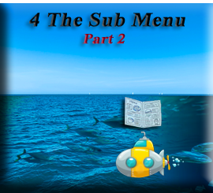
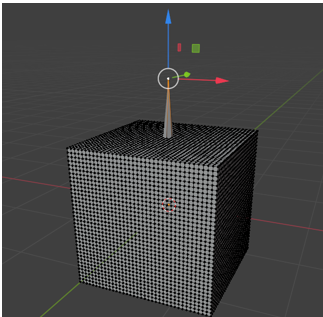

~ The Sub Menu Part Two~
2/3/2025
The Transform Orientation Menu
Proportional Editing Object and Proportional editing Falloff

The Second Section
The Transform Orientation Menu
The first one in this series of menu items is the Transform Orientation Menu. It is a dropdown which enables you to move your object in a certain way along a certain axis.
When you are in Global, you will see that the cube will move straight along your axis lines. Even if you rotate the cube, it will still move straight along these lines. Global is the default, and the cube, by moving in these straight line modes are simple following what is called the Global orientation.
The Local mode, you will still move straight along the lines if you are in the local mode. However, if you click on something like G (hotkey for the move tool) and X (hotkey for the X axis) the cube will move following the X axis orientation, and this can be changed by using G with the X, or Z hotkey to have the box move along those axis; however, things do not really start to get wonky until you try to rotate the box, and then the box will follow the lines based on the amount of rotation that the box is at.
The normal is always the vector perpendicular to a face, edge or vertex.
Vector: a vector is an object that has both length and direction. In geometry, a vector is demonstrated by using a line with an arrow showing direction.
Perpendicular: perpendicular means lines that cross in right angles to one another.
Turn on Face orientation. Face orientation is the same thing as normal, and it shows which way the faces are facing. You can tell all of the faces on this cube are facing outward because they are all purple/blue on the outside.
Flip Normals
I can flip the normal on one side of the box, while in edit mode. Change into face mode, select the front of the box, then go to Mesh-Normals -Fip
Now the front is showing the inside of the box
Now when you enter the Move tool, you will find that the gizmo is aligned with the center of the front part of the box. So, it is aligning itself with the normal. It will move based on this point.
By Moving the Z axis, you can see that moving this point works about the same as if we were to extrude it.
The Gimbal Mode is one that is never really used, so I won’t go over it here.
The View Orientation
This orientation is different depending on which direction that you are viewing it from.
It is useful when using the camera and the object is being moved from the view of the camera.
The Cursor Orientation
This transform orientation is based on the orientation of the 3D Cursor.
To change this, you can hit the letter N on the keyboard, to open up the side panel. Then go to the view tab. When you move the Y rotation or any other you can see the cursor rotation spin around.
Watch these penciled in like X lines inside the cursor to see the rotation spin around as you change it for the 3D cursor. So, the movement of the cube can be based on this.
Parent Mode
You can also move your object based on the orientation of a parent. In the Blender docs, you can have a parent object, and then move according to it. Here the cube is parented to a rotated empty, and then the cube is moving in the same way.
Transform Pivot Point
You will find that by default, the Transform Pivot Point is set to Median Point. You would think that it would be set automatically to the first setting in the list, which is Bounding Box, but you would be wrong.
The Pivot Point sets the location of the Object Gizmo. If you change this location, it can make it easier to make certain transformations around the point in which you want.
Probably the best way to go through all of these different options is to review the Blender documentation. This Pivot Point section can be found here.
It is different in Object mode and Edit mode
Object Mode pivot point.
Edit Mode pivot point
Snap Base Drop Down
This is also a huge menu. This will snap different sections of you object together when they become close to each other. Snap is available in both Object and Edit mode.
Again, probably the best way to learn about this menu is to go to the source, which is the Blender Documentation. The Blender docs is something which you should become familiar with using as it is your guide into the future and continually updated with each version’s changes.
Proportional Editing Object and Proportional editing Falloff
The Last Section is the Proportion Editing and Proportional editing Falloff.
Proportional Editing
Even though this is available in object mode, it really doesn’t work too well until you get to Edit mode.
Now just select one vertex on the top and use the move tool with the editing tool to see how it gets the other vertices to follow it.
Now if we did not use the proportional editing tool, and we selected that one vertex this is what happens

When we use it together with the proportional editing fall off tool, we get different effects. Here we are using the Smooth setting, as opposed to the first setting that we used which was Sphere.
And here we are setting the falloff to be Random
Ok, I think that that is enough to cover for one week. Next week we will be looking at more of this sub menu.